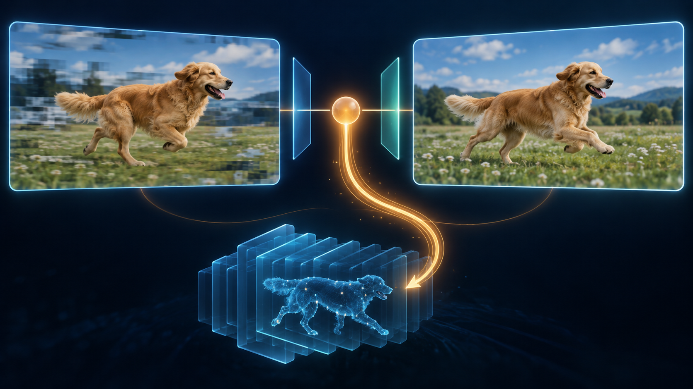
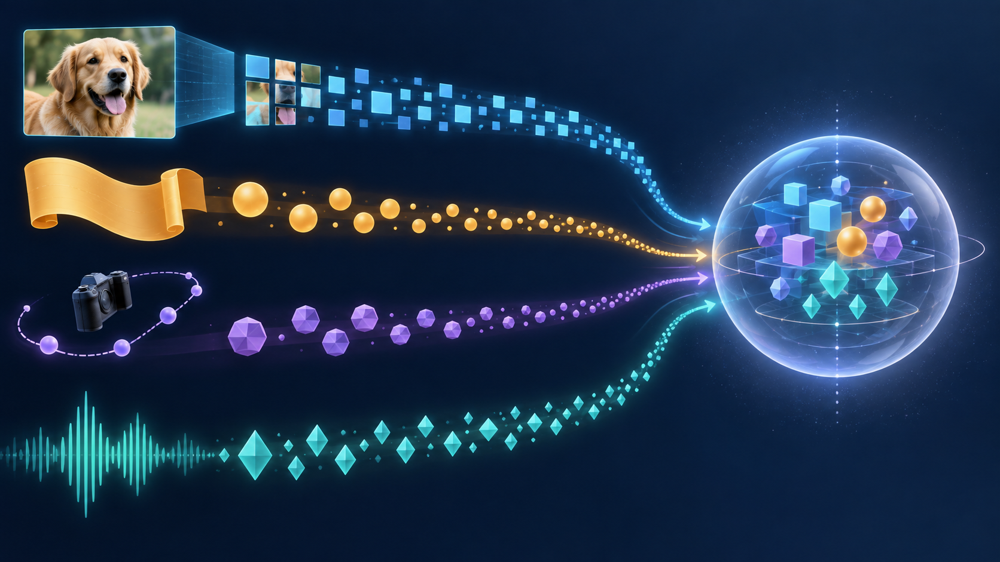
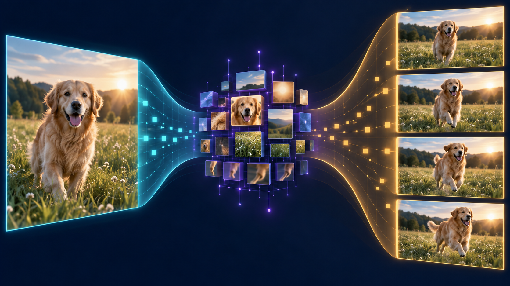
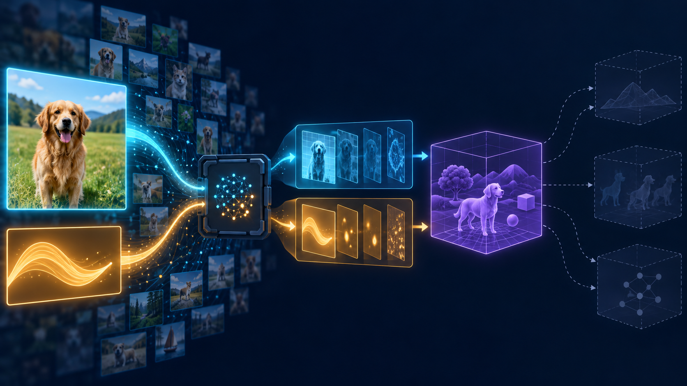

Opening · The problem before the machinery
Make this image move.
A still photograph gives us evidence about one moment. A video demands a future the photograph never recorded.
Look at one photograph of a golden dog standing in a field. Now add one instruction:
Make the dog run through the field in slow motion while the camera follows alongside it.
The request sounds simple because the desired result is short. But the image does not contain the next position of the dog's legs, the movement of its fur, the camera path, or the field that will be revealed when the viewpoint changes. Those future moments are not hidden in the pixels. They do not exist there at all.
Evidence is not a future
The source frame constrains visible appearance, composition, lighting, pose, and the current viewpoint. Even these are interpretations of pixel values rather than labels stored inside the photograph.
- Identity and visible appearance
- Current pose and composition
- Lighting and material clues
- One camera viewpoint
- Motion and deformation
- Newly revealed surfaces
- Camera trajectory
- A sequence of future moments
If the system preserves everything, it can repeat the first frame and make a frozen clip. If it creates without restraint, identity and geometry drift. Useful I2V must create inside constraints.
Given image I and conditions c, which videos V remain plausible? You do not need to calculate it. The expression protects one idea: the input constrains the future without fully determining it.
Why beautiful frames are not automatically a video
Five individually attractive dog images can still flicker when played together: the collar disappears, the face changes, or the fence shifts. Video adds a second obligation. Each frame must agree with the frames around it in identity, motion, geometry, camera, and meaning.
Idea earned: time turns generation into a persistence problem.
Act I · Learning
Why not write rules for motion?
“Move the dog forward” immediately breaks into more rules: paws follow different paths, joints bend, fur responds to movement, perspective changes, grass becomes hidden and visible. Then a different dog and camera arrive. The space of situations is too large and irregular for a practical rulebook.
The learning loop
A neural network contains adjustable numbers called parameters or weights. A loss function measures one selected kind of error. Backpropagation calculates how a small parameter change would affect that loss. The optimizer uses those gradients to adjust the parameters. Repeated across many examples, this produces a trained model.

Learns parameters from many examples. It repeatedly computes loss, gradients, and updates.
Uses the learned parameters for a new image and instruction. This is the pipeline the user experiences.
The user's photograph is not the dataset from which the model relearns dogs and motion. It is a new inference input that constrains patterns acquired during training.
Machinery earned: learning can create the model components we will later assemble.
Act II · Inputs
The user sees a dog. The model receives numbers.
The image file contains a grid of pixel values. The instruction becomes identifiers for words or word pieces. Before either can guide a video, they must be translated into forms the model can transform and compare.

CNN
Learned filters notice local patterns and combine them into larger visual features.
Vision Transformer
Image patches become token-like units whose relationships can later be computed.
Text encoder
Tokens become contextual language representations, so “runs” is interpreted with “dog” and “slow motion.”
Multimodal alignment
Visual and language representations learn enough shared structure for the instruction to reach the relevant content.
Tokens are pieces; embeddings are representations
A token is a unit the model processes. An embedding is the learned vector representing that unit numerically. Optional audio, depth, pose, or camera controls may enter through their own encoders.
Weak vision features can lose identity or structure. Weak text features can reduce “camera follows alongside” to vague motion. Weak alignment can make the system understand image and instruction separately while changing the wrong thing.
Machinery earned: the request has become machine-usable evidence and conditions. Nothing has been generated yet.
Act III · Representations
The model needs a smaller place to work.
A short video contains millions of pixel values. Repeatedly reasoning over every full-resolution pixel is expensive. The model needs a compact numerical workspace that preserves useful structure while discarding some literal detail: a latent space.

Learn to pack and unpack
An autoencoder learns two related transformations. The encoder compresses the input; the decoder reconstructs visible data. A variational autoencoder adds pressure for a more organized latent distribution, making the space more suitable for later sampling and generation.
Cheaper generation, greater risk of lost detail.
Richer detail, higher memory and compute cost.
A representation is not the world
A latent can lose tiny text, subtle texture, or exact geometry. It may preserve statistical patterns useful for plausible images without preserving facts needed for measurement or physical reasoning. An attractive reconstruction is not proof of a grounded simulation.
Machinery earned: visual and language representations now exist. The next question is how the right pieces influence one another.
Milestone I · Cumulative recap
From a frozen frame to a working scene.
This milestone does not pretend we can generate the video yet. It checks whether the foundation is strong enough to support what comes next.

Which internal pieces should find and influence one another?
Explain it back
- Why is a still image not a tiny hidden video?
- Why are hand-written motion rules insufficient?
- What changes during training—and what happens during inference?
- What is the difference between a token and an embedding?
- Why does the model use a latent representation?
- What critical ability is still missing?
A learned I2V system must first translate partial image evidence and an instruction into useful internal representations; the next problem is coordinating those representations before a future can be generated.
Sources and deeper reading
The story uses a deliberately gentle surface. These primary and authoritative references support the technical mechanisms behind it.
- Goodfellow, Bengio & Courville — Machine Learning Basics ↗
- Ho et al. — Video Diffusion Models ↗
- Dosovitskiy et al. — An Image Is Worth 16×16 Words ↗
- Radford et al. — Learning Transferable Visual Models From Natural Language Supervision ↗
- Kingma & Welling — Auto-Encoding Variational Bayes ↗
- Rombach et al. — High-Resolution Image Synthesis with Latent Diffusion Models ↗